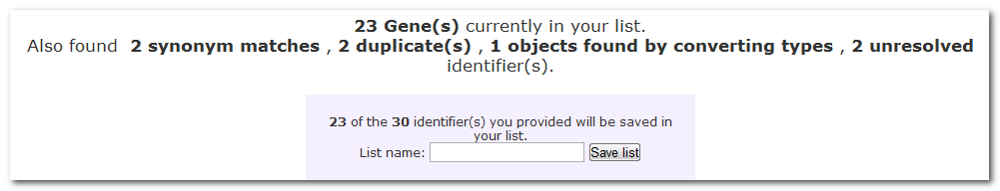
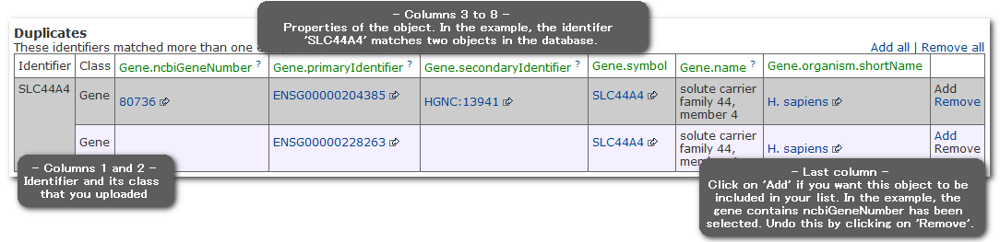
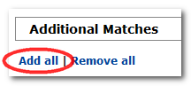
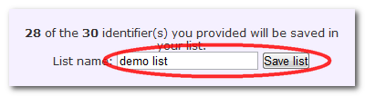

The basics
The list that you upload is checked against the TargetMine database to ensure that everything in your list can be found in TargetMine.
In the example below, only 23 out of 30 items were immediately recognized and added to the new list:
Any discrepancies are reported as follows:
1. Synonym matches: These are items in your list that do not match a key (main) identifier in TargetMine but were found as synonyms. This may mean you have a secondary (old) identifier or are using a gene symbol that is not the official symbol for that gene. If you are happy that the item identified is the correct one, you can add it to your list by clicking on 'Add' in the last column.
2. Duplicates: These are items in your list that match more than one entry in the database.
3. Converted types: These are items in your list that matched something in TargetMine, but not of the type you selected. (For example, if you selected type=gene, but had a protein identifier in your list). TargetMine can convert these into the type you selected so that you can add the item to your list - click on 'Add' in the last column.
4. Unresolved identifiers: These are items in your list that were either not found in TargetMine, could not be converted to the type you selected or matched objects from an organism other than the one you selected.
An example of 'Duplicate items' is shown below.
You can go over the list of 'Additional matches' and decide which one you want to include in your list. Alternatively, you can select all of them at once as follows:

You can then give a name for your new list and click save:
This will save your list in MyMine and take you to the corresponding List Analysis Page for this new list.